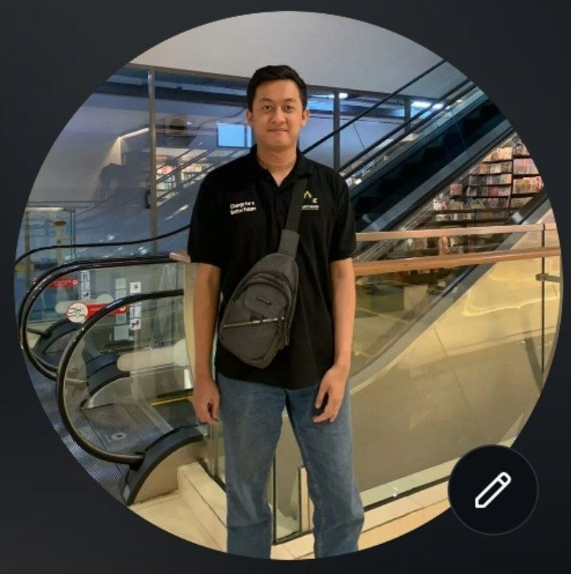

Adin Comara
Backend & Full-Stack Developer • AI Practitioner
Fokus pada rekayasa backend terstruktur dengan ekosistem Laravel & PHP, dipadukan dengan kecerdasan Multimodal AI (Vision OCR & LLM Agents) untuk otomasi proses data dan efisiensi sistem digital.

Core Expertise
Keahlian & Toolkit Utama
Spesialisasi dalam arsitektur backend terstruktur (Service & Action pattern), RESTful API berkinerja tinggi, database optimization (MySQL/PostgreSQL), background queues, dan otentikasi Sanctum.
Menghubungkan aplikasi web dengan kapabilitas model AI mutakhir: ekstraksi visual foto nota/dokumen (Multimodal OCR), structured JSON extraction, RAG, dan prompt engineering untuk otomatisasi data.
Selected Work
Proyek & Implementasi Nyata
CatatUang — AI Smart Financial Tracking
Live ProductionAplikasi keuangan mobile-first (PWA & WebView) yang dilengkapi Vision AI OCR untuk membaca struk/nota belanja secara otomatis dari kamera maupun galeri HP. Memiliki fitur multi-akun terisolasi per email Google OAuth, sistem cutoff bulanan, dan ekspor spreadsheet (.xlsx).
Enterprise Laravel API & Microservice Engine
Backend ArchitecturePondasi backend berskala enterprise dengan pola desain Repository-Service, asynchronous queue worker, manajemen otentikasi multi-tenant, serta integrasi webhook pihak ketiga yang tahan failover.
Mari Berdiskusi
Terbuka untuk kolaborasi proyek perangkat lunak, konsultasi integrasi AI, atau diskusi teknis. Hubungi saya langsung di: